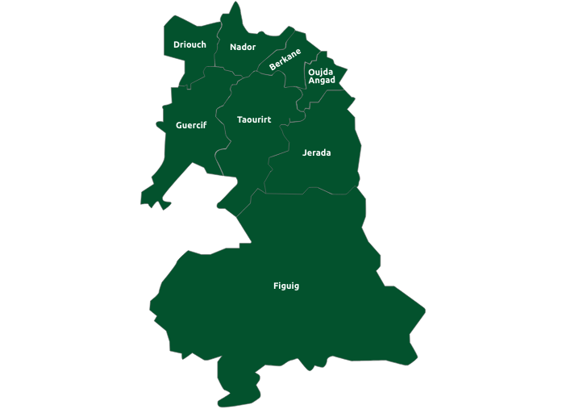

“La culture n'est pas un luxe mais une nécessité”
Gao Xingjian
Qui sommes nous
Pourquoi l'Oriental a besoin d'un magazine?

Taswir Magazine est un magazine semestriel, culturel et d'actualité dédié à la région de l'Oriental Marocain.
Son objectif est de mettre en avant la région de l'Oriental qui est très riche en histoire, en traditions etc.
L'Équipe est attaché à ce que ce territoire soit connu auprès des marocains de toute âge, des personnes du
monde entier qui souhaite découvrir notre beau pays. Nous oublions pas également que les amoureux du
Maroc sont aussi concerné !
Notre Équipe
Lahlou Souam, fondateur du Magazine et directeur de la publication
Diplômé d'un Master en journalisme et communication au sein de l'ESJ de Paris, il obtient un diplôme d'état en Développement Web et Web mobile. Il décida de développer le site web du magazine pour le présenter comme projet de fin de formation
Diplômé d'un Master en journalisme et communication au sein de l'ESJ de Paris, il obtient un diplôme d'état en Développement Web et Web mobile. Il décida de développer le site web du magazine pour le présenter comme projet de fin de formation
Magazine culturel de la région de l'Oriental